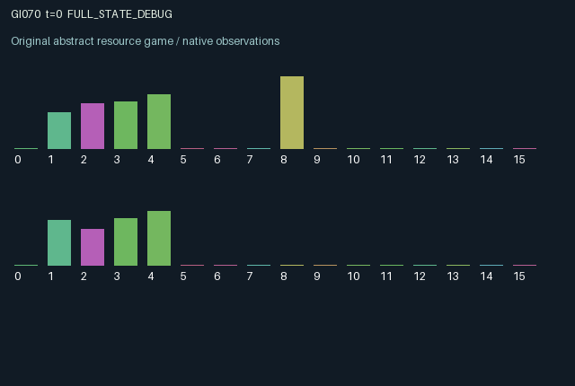

GI070 / LEGACY_ARRAY
astra-d2-00070: Cross-pollination with delayed yield and a shared aquifer
2 agents5 actions16 observation columns32 original horizonRuntime: PASS
Release verification episode
Untrained uniform legal actions. Actual JAX state sampled along the full original episode; full-state debug camera. No human performance or learning claim.

Run this game
crucibles play --game 70
Start Python locally, then open the address printed by the terminal. Installation, multiplayer, takeover and keyboard controls →
Objective, rewards & ending
Exact task contract
{
"objective": "Accumulate original per-agent rewards under the interaction rules in mechanism.md.",
"natural_termination": "No early terminal; original t >= 32 horizon.",
"exact_transition_and_reward_source": "def raw_step(self, key, state, actions):\n active = state['crop'] >= 0\n plant = ((actions == 1) | (actions == 2)) & (~active) & (state['nutrients'] >= 0.20)\n variety = (actions - 1).astype(jnp.int32)\n irrigate = (actions == 3) & active\n release = (actions == 4) & active\n requests = jnp.sum(irrigate.astype(jnp.float32))\n ration = jnp.minimum(0.16, state['aquifer'] / jnp.maximum(requests, 1.0))\n water = irrigate.astype(jnp.float32) * ration\n incoming = (state['pollen'] >= 0) & active\n compatible = incoming & (state['pollen'] != state['crop'])\n incompatible = incoming & (state['pollen'] == state['crop'])\n drought = active & (state['weather'] < 0.25) & (water < 0.01)\n health = jnp.clip(state['health'] + 0.22 * compatible.astype(jnp.float32) - 0.14 * incompatible.astype(jnp.float32) - 0.02 * drought.astype(jnp.float32), 0.0, 1.0)\n growth = jnp.clip(state['growth'] + active.astype(jnp.float32) * (0.09 + 0.03 * state['weather']) + 0.18 * water / 0.16 - 0.07 * release.astype(jnp.float32), 0.0, 1.20)\n harvested = active & (growth >= 1.0)\n preferred = state['crop'] == state['preference']\n harvest_value = harvested.astype(jnp.float32) * (0.65 * health + 0.15 * preferred.astype(jnp.float32))\n crop = jnp.where(plant, variety, jnp.where(harvested, -1, state['crop'])).astype(jnp.int32)\n next_growth = jnp.where(plant, 0.05, jnp.where(harvested, 0.0, growth))\n next_health = jnp.where(plant, 0.45 + 0.20 * state['nutrients'], jnp.where(harvested, 0.0, health))\n nutrients = jnp.clip(state['nutrients'] + 0.07 * (actions == 0).astype(jnp.float32) - 0.20 * plant.astype(jnp.float32) - 0.15 * harvested.astype(jnp.float32), 0.0, 1.0)\n aquifer = jnp.clip(state['aquifer'] - jnp.sum(water) + 0.09 + 0.06 * state['weather'], 0.0, 1.0)\n pollen = jnp.where(release, state['crop'], -1)[::-1].astype(jnp.int32)\n utility = harvest_value - 0.12 * plant.astype(jnp.float32) - 0.035 * water / 0.16 - 0.04 * release.astype(jnp.float32)\n next_state = {\n 't': state['t'] + jnp.array(1, dtype=jnp.int32),\n 'crop': crop,\n 'growth': next_growth.astype(jnp.float32),\n 'health': next_health.astype(jnp.float32),\n 'nutrients': nutrients.astype(jnp.float32),\n 'aquifer': aquifer.astype(jnp.float32),\n 'weather': jax.random.uniform(key, (), dtype=jnp.float32),\n 'preference': state['preference'],\n 'pollen': pollen,\n 'harvest': harvest_value.astype(jnp.float32),\n 'last_action': actions.astype(jnp.int32),\n }\n rewards = jnp.tanh(2.0 * utility).astype(jnp.float32)\n done_all = next_state['t'] >= 32\n dones = jnp.full((2,), done_all, dtype=jnp.bool_)\n info = {'done_all': done_all, 'legal_mask': self.legal_actions(next_state)}\n return self.observe(next_state), next_state, rewards, dones, info"
}Declared per-step reward bounds: -1.0 to 1.0. Observability: source_defined.
Rules
Original mechanism document (historical status wording retained)
# astra-d2-00070: Cross-pollination with delayed yield and a shared aquifer This parentless proposal combines generic resource competition and reciprocal ecological assistance. Two independently planted crops can benefit from the other plot's incompatible variety, while same-variety pollen damages crop health. This is an abstract rule system, not a biological accuracy claim, a copied game, or a demonstrated new equivalence class. Actions are 0 rest, 1 plant variety 0, 2 plant variety 1, 3 irrigate and 4 release pollen. Planting requires an empty plot and at least 0.20 nutrients; it consumes those nutrients and creates a crop with initial growth 0.05 and health determined by current nutrients. Existing crops grow each transition and automatically harvest when accumulated growth reaches 1.0. Irrigation speeds growth and consumes a common aquifer. Simultaneous requests share available water equally, with each request capped at 0.16. Water replenishes with the current shared weather. Rest replenishes private plot nutrients, while harvesting depletes them further. Pollen release puts the emitting crop's variety in the other agent's next-state incoming-pollen field. On the following transition it changes an established receiver crop's health: different variety adds 0.22 and same variety subtracts 0.14, subject to [0, 1] clipping. An empty or newly planted plot does not use that incoming pollen. The packet then expires unless replaced by another release. Release also reduces the emitter's current growth increment by 0.07 and incurs an immediate cost. Emission can still occur on a harvesting transition. Thus helping a compatible partner can delay one's own harvest, while mismatched coordination can damage the partner's eventual return. Each agent privately observes its own fixed variety preference, planted variety and crop health. Public signals include both nutrient reserves, growth, planted/empty indicators, previous actions and realized harvest values, together with weather and aquifer level. Incoming pollen reveals the emitted variety. Previous planting actions are public, so the partner's variety can be reconstructed from history; it is not claimed to remain secret. The other's fixed preference and health are not direct observation columns. The 16 columns are clock; own/other nutrients; shared aquifer; current weather; own crop code; own growth; own health; own preference; incoming pollen code; other growth; other planted indicator; own/other preceding harvest value; own/other previous action. Crop and pollen code 0 denotes absent, 0.5 variety 0 and 1.0 variety 1. A harvested crop returns 0.65 times health plus 0.15 if it matches the owner's preference. Utility subtracts 0.12 for successful planting, 0.035 times the fraction of a full irrigation ration, and 0.04 for pollen release. Reward is tanh(2 times utility), bounded in [-1, 1]. The shared water effect and the delayed pollen effect are separate routes by which either agent changes the other's prospects. Health and growth persist between actions, and unfinished crops at the 32-step horizon receive no forced salvage payout. Only source authorship and provenance are delivered here. No candidate execution, compiler result, eligibility judgment, nonisomorphism claim or learning result is asserted. Isolated validation is assigned to experimenter2.
Commands
0Replenish nutrients
1Plant variety 0
2Plant variety 1
3Irrigate
4Release pollen
Roles & abilities
agent_0 Original legacy agent; see mechanism and source
agent_1 Original legacy agent; see mechanism and source
Observation permissions
Training receives only the original observation rows. Role cameras use declared visibility; debug cameras are explicitly marked. Local benchmark records log debug exposure and role takeover history.
Exact observation layout
[
{
"slice": [
0,
16
],
"visibility": "exact original observe() below",
"source_code": "def observe(self, state):\n obs = jnp.zeros((2, 16), dtype=jnp.float32)\n obs = obs.at[:, 0].set(state['t'].astype(jnp.float32) / 32.0)\n obs = obs.at[:, 1].set(state['nutrients'])\n obs = obs.at[:, 2].set(state['nutrients'][::-1])\n obs = obs.at[:, 3].set(state['aquifer'])\n obs = obs.at[:, 4].set(state['weather'])\n obs = obs.at[:, 5].set((state['crop'].astype(jnp.float32) + 1.0) / 2.0)\n obs = obs.at[:, 6].set(state['growth'])\n obs = obs.at[:, 7].set(state['health'])\n obs = obs.at[:, 8].set(state['preference'].astype(jnp.float32))\n obs = obs.at[:, 9].set((state['pollen'].astype(jnp.float32) + 1.0) / 2.0)\n obs = obs.at[:, 10].set(state['growth'][::-1])\n obs = obs.at[:, 11].set((state['crop'][::-1] >= 0).astype(jnp.float32))\n obs = obs.at[:, 12].set(state['harvest'])\n obs = obs.at[:, 13].set(state['harvest'][::-1])\n obs = obs.at[:, 14].set(state['last_action'].astype(jnp.float32) / 4.0)\n obs = obs.at[:, 15].set(state['last_action'][::-1].astype(jnp.float32) / 4.0)\n return obs"
}
]Entity visibility & attributes
[]
Actual verification & provenance
Per-game execution receipt
{
"game": "gi070",
"status": "PASS",
"verification_revision": 2,
"source_sha256": "46992e53d547d0c0204dea545e399c1039d3ea16ee30408b76879a13cfddc47f",
"seed": 20261101,
"runtime": {
"jax": "0.4.38",
"numpy": "1.26.4",
"devices": [
"TFRT_CPU_0"
]
},
"dimensions": {
"num_agents": 2,
"observation_size": 16,
"num_actions": 5,
"max_steps": 32
},
"checks": {
"eager_reset": {
"status": "PASS",
"seconds": 0.7283203601837158
},
"observation_spaces_legal_masks": {
"status": "PASS",
"seconds": 0.13978791236877441
},
"eager_step": {
"status": "PASS",
"seconds": 0.9670507907867432
},
"jit_reset": {
"status": "PASS",
"seconds": 0.23628520965576172
},
"jit_step": {
"status": "PASS",
"seconds": 0.5055496692657471
},
"eager_jit_integer_parity_float_measurement": {
"status": "PASS",
"seconds": 0.003092050552368164
},
"jit_vmap_reset": {
"status": "PASS",
"seconds": 0.28223156929016113
},
"jit_vmap_step": {
"status": "PASS",
"seconds": 0.4695758819580078
},
"outer_autoreset_api": {
"status": "PASS",
"seconds": 0.8940894603729248
},
"full_original_horizon_episode_and_render": {
"status": "PASS",
"seconds": 2.0536115169525146
}
},
"human_scores": null,
"browser_controls": "PENDING",
"failures": [],
"elapsed_seconds": 6.808049917221069,
"float_parity_max_abs": 0.0,
"numerical_parity": "EXACT",
"raw_terminal_absorbing": "NOT_PART_OF_ORIGINAL_LEGACY_CONTRACT",
"terminal_outer_reset": "PASS",
"episode_steps": 32,
"scripted_random_returns": [
0.0007378906011581421,
0.2908052057027817
],
"terminal": true,
"demo_information": "FULL_STATE_DEBUG",
"demo_frames": 33,
"render_roles_checked": 2
}Chromium control verification
{
"game": "gi070",
"status": "PASS",
"human_scores": null,
"engineering": true,
"checks": [
"catalog_selected_and_real_native_reset",
"dom_queue_and_native_step",
"second_participant_ownership_and_native_joint_step",
"all_roles_individually_controllable_no_role_cap",
"explicit_debug_camera",
"release_to_pure_ai_without_reset"
],
"ui_sha256": "15b5861d23b3c42811865c954d5a988280bbfd21cf8e93754be2437a027158c5",
"seconds": 2.8542442321777344
}Original identity and file hashes
{
"id": 70,
"key": "gi070",
"title": "astra-d2-00070: Cross-pollination with delayed yield and a shared aquifer",
"summary": "",
"tags": [],
"family": "legacy_array",
"dimensions": {
"num_agents": 2,
"observation_size": 16,
"num_actions": 5,
"max_steps": 32
},
"source_sha256": "46992e53d547d0c0204dea545e399c1039d3ea16ee30408b76879a13cfddc47f",
"manifest_sha256": "09eed53a6abb96e137a8730d94a05dc88e17d9f0fc75ed3b24c0dece7c0033fc",
"files": [
{
"file": "candidate.py",
"sha256": "46992e53d547d0c0204dea545e399c1039d3ea16ee30408b76879a13cfddc47f",
"bytes": 5146,
"origin": "work/exp_2/astra_generation/discovery_v2/initial/candidate_00070/attempt_00/candidate.py"
},
{
"file": "mechanism.md",
"sha256": "0ae6efc457333863adf77417888ab604c75e3fa2c7ae4afd6b69799c339a715a",
"bytes": 3362,
"origin": "work/exp_2/astra_generation/discovery_v2/initial/candidate_00070/attempt_00/mechanism.md"
}
],
"original_status": "LEGACY_SOURCE",
"original_saved_replay": false,
"release_validation": "PASS",
"human_scores": null,
"browser_validation": "PASS"
}